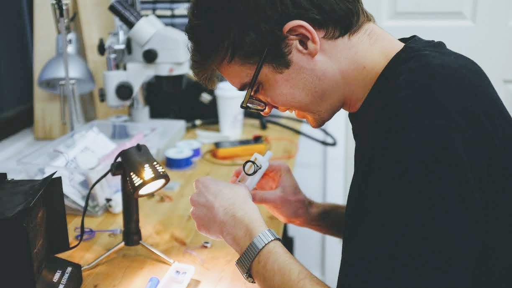

Hi, I'm Alan
I write software for hardware-related things.
Some projects I've worked on:
- A user interface for operating 80,000 pound autonomous excavators.
- A safety science platform and wearable device used by package handlers at several of the world's largest companies.
- A social wearable device that’s sparked conversations at a conference with over 1,500 attendees.

Photo: Nick Chelyapov.
Let's meet
I do freelance development work every now and then, and I would love to talk about your project.
I focus on software development - infrastructure software in web environments, device software in embedded Linux environments, and bare metal firmware on microcontrollers - but I can also help with hardware things like CAD and circuit design.
Email me at aargondizza@gmail.com to get in touch!
Other ways to say hello:
I live and work in San Francisco, CA. If you're in the area, say hi!